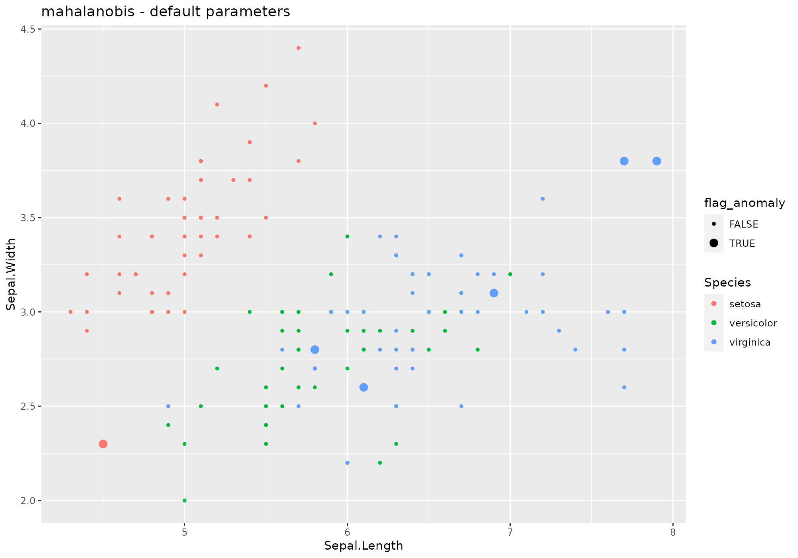
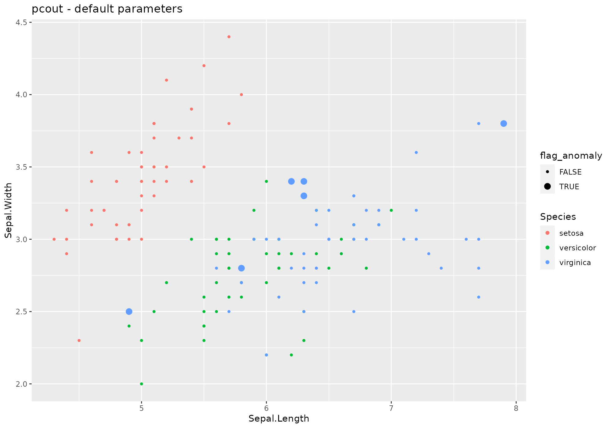

stranger weirds methods
WeLoveDataScience
2017-12-21
In this vignette, we introduce every method available in stranger package. Note that methods may require extra packages.
We will work with iris dataframe and use lucky_odd function.
The list of cuttently available wrappers / weirds methods is listed below (one can use weirds_list function to obtain them).
| weird_method | name | package | package.source | foo | detail |
|---|---|---|---|---|---|
| Angle-based Outlier Factor | abod | abodOutlier | CRAN | abod | Numeric value (outlier factor) |
| autoencode | autoencode | autoencoder | CRAN | autoencode | Positive numeric value (probability) |
| isolation Forest | isofor | isofor | github | iForest | Positive numeric value (distance) |
| kmeans () | kmeans | stats | CRAN | kmeans | Positive numeric value (distance) |
| k-Nearest Neighbour | knn | FNN | CRAN | knn.dist | Positive numeric value (distance) |
| Local Outlier Factor | lof | dbscan | CRAN | lof | Positive numeric value (local outlier factors) |
| Mahalanobis distance | mahalanobis | stats | CRAN | mahalanobis | Positive numeric value (distance) |
| Semi-robust principal components > distances | pcout | mvoutlier | CRAN | pcout | Positive numeric value (distance) |
| randomforest outlier metric | randomforest | randomForest | CRAN | randomForest | Positive numeric value (distance) |
Following some helper function is introduced to simplify code apparing in each chunk.
anoplot <- function(data,title=NULL){
g <- ggplot(data, aes(x=Sepal.Length,y=Sepal.Width,color=Species,size=flag_anomaly))+geom_point()+scale_size_discrete(range=c(1,3))
if (!is.null(title)) g <- g+ ggtitle(title)
return(g)
}abod
## *** weird method Angle-based Outlier Factor
## abod based on function abod [abodOutlier]
## Metric: Numeric value (outlier factor) sorted in increasing order.iris %>%
lucky_odds(n.anom=6, analysis.drop="Species", weird="abod") %>%
anoplot(title="abod - default parameters")## Loading required package: abodOutlier## Loading required package: cluster## Done: 10 / 150
## Done: 20 / 150
## Done: 30 / 150
## Done: 40 / 150
## Done: 50 / 150
## Done: 60 / 150
## Done: 70 / 150
## Done: 80 / 150
## Done: 90 / 150
## Done: 100 / 150
## Done: 110 / 150
## Done: 120 / 150
## Done: 130 / 150
## Done: 140 / 150
## Done: 150 / 150## Warning: Using size for a discrete variable is not advised.
Default values for abod parameters:
- k=10
- … additional parameters to be passed to
abod(methodandn_sample_size- see?abod.
Extra parameters used in stranger for this weird: none.
Default naming convention for generated metric based on k.
NOTE: this method is not recommended for volumetric data.
Fromabod help:
Details
Please note that ‘knn’ has to compute an euclidean distance matrix before computing abof.
Value
Returns angle-based outlier factor for each observation. A small abof respect the others would indicate presence of an outlier.autoencode
## *** weird method autoencode
## autoencode based on function autoencode [autoencoder]
## Metric: Positive numeric value (probability) sorted in decreasing order.iris %>%
lucky_odds(n.anom=6, analysis.drop="Species", weird="autoencode") %>%
anoplot(title="autoencode - default parameters")## Loading required package: autoencoder## autoencoding...
## Optimizer counts:
## function gradient
## 127 32
## Optimizer: successful convergence.
## Optimizer: convergence = 0, message =
## J.init = 41.81871, J.final = 0.3683745, mean(rho.hat.final) = 0.001229368## Warning: Using size for a discrete variable is not advised.
Changing some parameters:
iris %>%
lucky_odds(n.anom=6, analysis.drop="Species", weird="autoencode",nl=4, N.hidden=c(10,8),beta=6) %>%
anoplot(title="autoencode - change network layers strucure")## autoencoding...
## Optimizer counts:
## function gradient
## 27 3
## Optimizer: successful convergence.
## Optimizer: convergence = 0, message =
## J.init = 41.81598, J.final = 1.626553, mean(rho.hat.final) = 1.75727e-12## Warning: Using size for a discrete variable is not advised.
Default values for autoencode parameters:
- nl=3
- N.hidden=10
- unit.type=“tanh”
- lambda=0.0002
- beta=6
- rho=0.001
- epsilon=0.0001
- optim.method=“BFGS”
- max.iterations=100
- rescale.flag=TRUE
- …: user may pass other parameters to
autoencode(rescaling.offset).
Extra parameters used in stranger for this weird: none.
Default naming convention for generated metric based on nl and n.hidden.
Fromautoencode package:
An autoencoder neural network is an unsupervised learning algorithm that applies backpropagation to adjust its weights, attempting to learn to make its target values (outputs) to be equal to its inputs. In other words, it is trying to learn an approximation to the identity function, so as its output is similar to its input, for all training examples. With the sparsity constraint enforced (requiring that the average, over training set, activation of hidden units be small), such autoencoder automatically learns useful features of the unlabeled training data, which can be used for, e.g., data compression (with losses), or as features in deep belief networks.
Usage here is to learn an autoencoder then apply it to same data and look at high residuals.
isofor
## *** weird method isolation Forest
## isofor based on function iForest [isofor]
## Metric: Positive numeric value (distance) sorted in decreasing order.iris %>%
lucky_odds(n.anom=6, analysis.drop="Species", weird="isofor") %>%
anoplot(title="isofor - default parameters")## Loading required package: isofor## Warning: Using size for a discrete variable is not advised.
Default values for abod parameters – see ?iForest:
- nt=100
- phi=min(nrow(data)-1,256)
- seed=1234
- multicore=FALSE
- replace_missing=TRUE
- sentinel=-9999999999
Extra parameters used in stranger for this weird: none.
Default naming convention for generated metric based on nt and phi.
NOTE: this method is not recommended for volumetric data.
FromiForest help:
An Isolation Forest is an unsupervised anomaly detection algorithm. The requested number of trees, nt, are built completely at random on a subsample of size phi. At each node a random variable is selected. A random split is chosen from the range of that variable. A random sample of factor levels are chosen in the case the variable is a factor.
X are then filtered based on the split criterion and the tree building begins again on the left and right subsets of the data. Tree building terminates when the maximum depth of the tree is reached or there are 1 or fewer observations in the filtered subset.
kmeans
## *** weird method kmeans ()
## kmeans based on function kmeans [stats]
## Metric: Positive numeric value (distance) sorted in decreasing order.iris %>%
lucky_odds(n.anom=6, analysis.drop="Species", weird="kmeans") %>%
anoplot(title="kmeans - default parameters")## Warning: Using size for a discrete variable is not advised.Default values for kmeans parameters – see ?kmeans:
- type=“means”
- centers=4
- algorithm=“Hartigan-Wong”
- iter.max=10
- nstart= centers parameter (4)
Extra parameters used in stranger for this weird: none.
Default naming convention for generated metric based on type and centers.
iris %>%
lucky_odds(n.anom=6, analysis.drop="Species",weird="kmeans",type="euclidian",centers=8) %>%
anoplot(title="kmeans - euclidean - nclusters (centers)=8")## Warning: Using size for a discrete variable is not advised.
iris %>%
lucky_odds(n.anom=6, analysis.drop="Species",weird="knn",simplify="median") %>%
anoplot(title="knn - k=default (10), simplify=median")## Loading required package: FNN## Warning: Using size for a discrete variable is not advised.
knn
## *** weird method k-Nearest Neighbour
## knn based on function knn.dist [FNN]
## Metric: Positive numeric value (distance) sorted in decreasing order.iris %>%
lucky_odds(n.anom=6, analysis.drop="Species", weird="knn") %>%
anoplot(title="knn - default parameters")## Warning: Using size for a discrete variable is not advised.
Default values for knn parameters – see ?knn:
- k=10
- … other parameters to be passed to
knn(prob, algorihtm)
Extra parameters used in stranger for this weird:
- simplify=“mean”: name of a function to be used to aggregate neirest neighbours distances. User may use other existing base funcions (for instance
median) but can also use his own function – name to be supplied as string.
Default naming convention for generated metric based on k and simplify.
iris %>%
lucky_odds(n.anom=6, analysis.drop="Species",weird="knn",k=8) %>%
anoplot(title="knn - k=8")## Warning: Using size for a discrete variable is not advised.
iris %>%
lucky_odds(n.anom=6, analysis.drop="Species",weird="knn",simplify="median") %>%
anoplot(title="knn - k=default (10), simplify=median")## Warning: Using size for a discrete variable is not advised.lof
## *** weird method Local Outlier Factor
## lof based on function lof [dbscan]
## Metric: Positive numeric value (local outlier factors) sorted in decreasing order.iris %>%
lucky_odds(n.anom=6, analysis.drop="Species", weird="lof") %>%
anoplot(title="lof - default parameters")## Loading required package: dbscan## Warning: Using size for a discrete variable is not advised.
Default values for lof parameters – see ?lof:
- k=10
- … other parameters to be passed to
kNNfromdbscanpackage (search, bucketSize…).
Extra parameters used in stranger for this weird: none.
Default naming convention for generated metric based on k.
iris %>%
lucky_odds(n.anom=6, analysis.drop="Species",weird="lof",k=8, search="linear") %>%
anoplot(title="lof - k=8 - linear kNN")## Warning: Using size for a discrete variable is not advised. From lof help:
mahalanobis
## *** weird method Mahalanobis distance
## mahalanobis based on function mahalanobis [stats]
## Metric: Positive numeric value (distance) sorted in decreasing order.iris %>%
lucky_odds(n.anom=6, analysis.drop="Species", weird="mahalanobis") %>%
anoplot(title="mahalanobis - default parameters")## Warning: Using size for a discrete variable is not advised. No parameter available.
Default naming convention: mahalanobis.
pcout
## *** weird method Semi-robust principal components > distances
## pcout based on function pcout [mvoutlier]
## Metric: Positive numeric value (distance) sorted in decreasing order.iris %>%
lucky_odds(n.anom=6, analysis.drop="Species", weird="pcout") %>%
anoplot(title="pcout - default parameters")## Loading required package: mvoutlier## Warning: package 'mvoutlier' was built under R version 3.4.3## Loading required package: sgeostat## sROC 0.1-2 loaded## Warning: Using size for a discrete variable is not advised.
Default values for pcout parameters – see ?pcout:
- explvar=0.99
- crit.M1=1/3
- crit.M2=1/4
- crit.c2=0.99
- crit.cs=0.25
- outbound=0.25
- … not used here.
Extra parameters used in stranger for this weird: none.
Default naming convention for generated metric based on explvar.
iris %>%
lucky_odds(n.anom=6, analysis.drop="Species",weird="pcout", explvar=0.8, crit.Ml=1, crit.cl=3) %>%
anoplot(title="pcout - custom values")## Warning: Using size for a discrete variable is not advised. From
From pcout help:
randomforest
## *** weird method randomforest outlier metric
## randomforest based on function randomForest [randomForest]
## Metric: Positive numeric value (distance) sorted in decreasing order.iris %>%
lucky_odds(n.anom=6, analysis.drop="Species", weird="randomforest") %>%
anoplot(title="randomforest - default parameters")## Loading required package: randomForest## Warning: package 'randomForest' was built under R version 3.4.3## randomForest 4.6-12## Type rfNews() to see new features/changes/bug fixes.##
## Attaching package: 'randomForest'## The following object is masked from 'package:ggplot2':
##
## margin## The following object is masked from 'package:dplyr':
##
## combine## Warning: Using size for a discrete variable is not advised.Default values for randomforest parameters – see ?randomforest:
- ntree=500
- mtry=sqrt(ncol(data))
- replace=TRUE
- … other parameters to be used in
randomForest
Extra parameters used in stranger for this weird: none.
Default naming convention for generated metric based on ntree and mtry.
iris %>%
lucky_odds(n.anom=6, analysis.drop="Species",weird="randomforest", explvar=0.8, ntree=10,mtry=2) %>%
anoplot(title="randomforest - custom values")## Warning: Using size for a discrete variable is not advised.
To go further
Logical next step is to look at how to work with weirds methods: manipulate, work with metrics (aggregation and stacking), derive anomalies. For this, read vignette Working with weirds